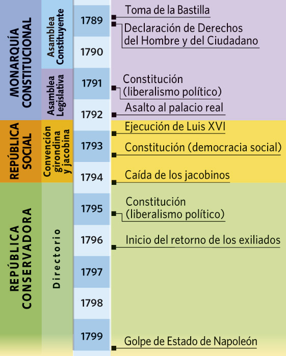

SA02 · Cine i revolució
8. El retorn de l’ordre
De la revolució a una nova autoritat
Qüestió clauQuan una societat accepta limitar la llibertat en nom de la seguretat i l’ordre?

| Moment | Problema | Resposta | Contradicció |
|---|---|---|---|
| Monarquia constitucional | Limitar el rei | Constitució de 1791 | Sufragi censatari |
| República jacobina | Salvar la Revolució | Mobilització i excepció | Terror i repressió |
| Directori | Estabilitzar el règim | República moderada | Dependència de l’exèrcit |
| Consolat i Imperi | Ordre i expansió | Centralització i reformes | Autoritarisme |
Napoleó: continuïtat i ruptura
Consolidà la igualtat civil masculina, l’administració, el mèrit i el Codi Civil; al mateix temps limità llibertats, censurà la premsa i construí un poder personal i militar. El balanç depén del criteri: drets civils, participació política, estabilitat o expansió imperial.
Evitem una falsa equivalènciaNo identificarem mecànicament Napoleó amb cap dirigent egipci. Compararem un problema —l’atractiu de l’ordre després de la inestabilitat— i explicarem les diferències institucionals, socials i internacionals.
Judici provisional
«El retorn de l’ordre és el fracàs de la revolució». Defensa o refuta l’afirmació amb un argument, una evidència, un contraargument i un matís.